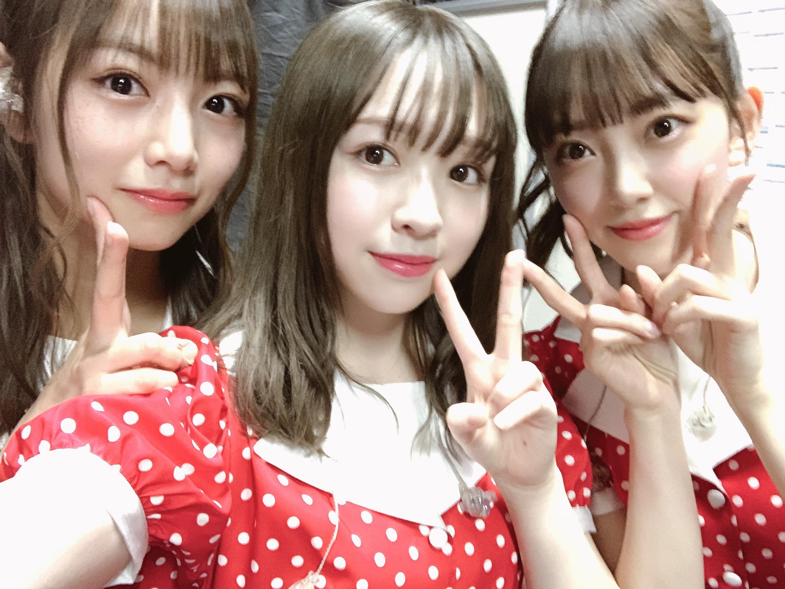

2020/0302Mon帽子は三色
皆様こんばんは！
8th YEAR BIRTHDAY LIVE が
無事終了いたしました。
お越しくださった皆様、ありがとうございました！
リハーサル期間はとても大変だったけど、
出させた頂いた1曲1曲が大切で
また素敵な思い出となりました。
思い入れがある曲で言えば
風船は生きているの演出では
久しぶりに
♪穴が開いた気がするんだ〜
の後のみんなが私を囲んで指を
指してくれるところを踊れて、
私は凄く嬉しかったです。
後ろのスクリーンでは砂絵を使った
物語を作ってくださっていて
スタッフの皆様にも大感謝でした。
あの時のオリジナルメンバーはもう
ほとんどいなくて寂しい気持ちもあったけど
新たにポジションに入ってくれていた子達が
楽しそうに踊っているのを見て
とても嬉しかったです。
君が扇いでくれた
間奏で一人で踊らさせていただきました。
たった数秒の世界だけど
4日目と言うこともあり、
気持ち込め込めで踊りました。
少しでも伝わってくれていたら嬉しいです
乃木坂46メンバーみんなの良さが詰まった
ライブで、どの曲も演出もとても良かった！
みんな可愛い！！！！
メンバーの顔一人一人の笑顔を見ながら
本当にみんな可愛くて綺麗で
このグループにいられて本当に幸せだなあと
思いました。

ゴルゴンゾーラ隊
8周年、改めておめでとう乃木坂46！

先日発表がありましたが、
3月7日に開催予定だった2期生ライブが
中止となりました。
楽しみにされていた皆様、申し訳ございません。
悔しいけれどそれでも皆さんの安全が少しでも
守られるなら、私は嬉しいです
次の機会があると信じて前を見るしかない！
皆さんに絶対お見せしたい！
だからそれまで、待っていてくださいね。

みり愛
2020/03/02 19:42


コメント(542)
ライブおつかれ！
バスラもお疲れさま！！
みり愛ほんとにキラキラしてた！
コロナ早くおさまれ！！！！
ソロダンスかっこよかったです！
覚えててくれてるかな？？
ライブお疲れ様でした☺︎☺︎
風船は見れなかったけど、ライビュで君が扇いでくれた見れたよ！嬉しかった〜！
2期生ライブは残念だけど、これからも活躍期待してます！
大好きだよ！！！
ライブお疲れ様！
一番輝いてたよ！
ありがとう
これからも沢山曲聞かせて欲しい〜〜
握手会も行きますね〜♪
ライブお疲れ様！
一番輝いてキラキラしてて最高でした！
ゴルゴンゾーラ、大好きです♡
2期生LIVE残念だけど、テレビで活躍するみんなを
楽しみにしてます!
バスラお疲れ様！！見に行かなかったけれど、いろんな写真みて、みんなが輝いてて、わたしもほっこりしました！！
そして二期生ライブ！
ほんとに悔しいね、、、
また絶対開催してほしいし、絶対行くから、待ってるから！
みりあちゃんも体調にはくれぐれも気をつけて過ごしてください！
いつもありがとう！！
バスラ4日間お疲れ様！！
アンコールの時の蓮加との絡みめちゃくちゃ可愛かったし、アリーナでみり愛が見れて幸せでした！！
早く握手会で会いたいです！！
2期生ライブ残念やったけど、
メンバー含め皆の健康考えたら
やっぱり我慢するしかないね、、、
健康に気をつけて頑張って！
ぼむすけ
4日目しかいけなかったけどとても楽しかった！
握手会も行くんでよろしくお願いします❗️
バスラお疲れ様でした。4日間全て会場で見ることができて嬉しかった。
個人的にはアンコールで4日とも蓮加ちゃんとはしゃいでたのがめっちゃ良かった！笑笑
ゴルゴンゾーラは初めてパフォーマンス見れて最高やった。
2期ライブ中止は残念やね。でも、またできるように僕たちも応援するから！
これからも体調に気をつけて頑張ってね！応援してます。
ほんとに2期生ライブ悔しいけどまたいつかやることを信じて楽しみにしとくね！！！
あとはみり愛となかなか会えとらんから握手会が楽しみ〜✨
みり愛ちゃんのセンターどっちも見れてよかった
birthdayLive4日間お疲れ様でした！4日間会場に入ってみり愛ちゃんのパフォーマンスを見ることが出来て嬉しかったです！！
初めて生でボーダー、風船は生きているとか、みり愛ちゃんがでできるユニット曲を見ました。物凄くかっこよくて感動しました。本当にありがとう！
2期生単独ライブは中止なってしまったけどまたどこがで開催してくれる事を祈ってます！
本当にお疲れさでした！ゆっくり休んでね！
自分は初日に見に行ったよ～！
風船とかAm I Loving?とか2度目のキスからとか
みり愛のセンター曲、参加曲たくさん見れて本当に嬉しかった！
また2期生ライブをやる機会があるときは必ず行くよ！
だからその日まで頑張ろう！きっと叶う！
今年もお祝いできて嬉しい！！
来年もお祝いできたらいいなぁ〜〜
2期生ライブはほんとうに残念だったしショックだったけど、次があると思えば頑張れる！！
メンバーとかファンがコロナにかかったら元も子も無いしね....
今回は良い判断だった！と言い聞かせる！
3/29の個握も開催してくれるか分からないけど、とにかく今はみり愛ちゃんに会いたいな〜〜お話ししたい〜(｡•́︿•̀｡)
バスラ4日間おつかれさま！
ゆっくり休んでね〜
2期生ライブはまたいつか。必ず。
バースデーライブお疲れ様でした！
「君が扇いでくれた」の間奏のダンス
とても感動しました。
センターステージが近くて
間近で観れてとても良かったです！
二期ライブの中止は
念願の単独ライブだっただけに
とても悔しいです。
今の二期生ならまたチャンスは訪れると思います。
7年目を迎えた二期生が
また一つ大きくなって
「乃木坂46 二期生単独ライブ」
を叶える日が必ず来ると信じて待ってます！
だからまたその時まで二期生と共に
頑張っていきたいと思ってます！
二期生のことが大好きです。
バスラお疲れ様でした！！！
2期生ライブは絶対やろうね！いつでも待っとる！
開催できたら爆発させよう！
最後にデコ出し写真あげてくれてありがとう
僕が1番好きなのよ！w
バスラお疲れ様でした！
カナダに留学中なので行くことは出来ませんでしたが、無事に終わったみたいでよかったです。
風船は生きている聴きたいなぁー！
また、みり愛！ってこーるしたいです！8月までカナダなのでそれまで頑張ります！では！！
二期生ライブ、残念だけど、本当にチケットが取れなくてめちゃくちゃ素敵なメンバーの集まりって言うことは世間に証明されたと思います！
ファンの僕らも諦めていません！絶対いつか、もっと大っきい会場でステキな光景が見られることを祈ってます。
応援してます！
バスラ2日目と4日目行ったよー！！
みんな最高だったし、もちろんみり愛、安定に可愛かったしダンスも歌も魅了され、頑張ろって思えたよ！！お疲れ様でした！！
2期生ライブ、当選したのに残念だよ、悔しいよ
いつか必ず実現して欲しいなぁ〜、ずっと待ち続けます！！
ブログ更新ありがとうね
バスラお疲れ様でした
良かったね
でも、二期生のライフの中止、寂しい
まだ
2期生ライブやりますよ
いきます
約束する
じゃ、
握手会会いましょう
中国のOston リ
バスラお疲れ様！
ゴルゴンゾーラは聴けなかったけど、風船は生きていると君が扇いでくれたを聴けてよかった！！！
2期生ライブはめちゃくちゃ楽しみやったけど仕方ないよね！
次の機会があると信じてます！
仕事始まったからイベントいけるか分からんけどずっと応援してます！！！
8thバスラ最高でした！！
全日参戦してみり愛ちゃん参加曲たくさん見れてほんとに幸せでした！！
風船で輝いてるみり愛ちゃんを見れてほんとに幸せでした！
握手会が楽しみですー
バスラ行けなかった分2期生ライブ盛り上げよう！って思ってたんですけど残念です。でも仕方ないですね。。。
またいつか絶対やれるって信じてます。2期生の底力期待してます！
自分たちも全力で応援します！ファイト
バスラお疲れ様(^^)
風船は生きているでは会場中が白のサイリウムで綺麗だったことも嬉しかった！
最後のサビの前には「みりあー！」って叫ぶの楽しいし、みり愛すごい良い顔してて、あー良かった^ - ^って思いましたのです。
Am I Loving?観れて良かったな〜可愛かったな〜いいね〜
ゴルゴンゾーラは観たかった！次こそ観る。
二期生ライブは再び開催の報告が聞けることを本当に楽しみにしてます！
握手会も行けるから楽しみ^ ^
ありがとね〜
涼
バースデーライブ4日間お疲れ様！
初日の風船でみり愛の名前を叫んだ時、みり愛を好きにって良かったって思えたんだ笑
影ナレも、まさか全員2期生が務めてくれるなんて思っても見なかったからビックリしたよ笑
でも同時にめちゃくちゃ嬉しかった！！！
2期ライブ、今回は残念だけどきっとまた機会が来るから
その時に2期生全員の全力のパフォーマンスを見れる事を楽しみにしてるね！
大好きだよ
バスラお疲れ様でした！！
4日間全日観れたからみり愛ちゃんのパフォーマンスをめちゃめちゃ感じれたよ！！
次の握手会でたくさん感想言うね！！
2期ラ中止は悲しいけど2期のメンバーなら絶対に復活できると信じてるよ！！
あと！3/29の個握行くからね！！
楽しみにしてるね〜！！
バスラ1日目に行ったよ！！
風船生で見れてすごく嬉しかったです
みり愛が楽しそうに踊るのとサンドアートがいい感じでした！
サイリウムもみなさん白にしてぐさってきれいだった！
２度目のキスからも見れて嬉しかった
2期生ライブ残念だけど
次やる時は絶対に行きます！！
次のシングルの個握大阪だけだけど結構とったので
1年ぶりにいくよ！！
受験があっていけなかったけどもう終わったので
中止や延期にならなかったら5月よろしくお願いします！
体調には気をつけてください。
1日目に行って4日目はライビュでした
1日目のセトリはたくさんみり愛ちゃんのセンターや参加曲あって嬉しかったです
影ナレもやって推しメンなのでとても嬉しかったです
とにかくライブでのみり愛ちゃん可愛かったです
2期生ライブは残念ですがいつでも待ちます
また宇宙兄弟で猫舌showroomやってください
これからも体調には気をつけて頑張ってください！
乃木坂46お誕生日おめでと〜
バスラ1.3.4日目行ったよ！
風船は生きているのみり愛ちゃんが笑顔で踊ってるのが大好きだからそれを生で見れたのすっごく嬉しかった！
あとアムアイラビング！！みれた！嬉しい！かわいかった！
煽り曲とかめっちゃれんたんとわちゃわちゃしてたのみてたからねー！
君が扇いでくれたのソロダンスが素敵すぎて見入っちゃったし私の推しメンがみり愛ちゃんでよかった、みり愛ちゃんを推しててよかったって改めて思いました。でもねー、ゴルゴンゾーラ見れんかったの〜
二期生ライブも当たってたから二期生ライブで観れるといいなぁって思っとったから中止はとっても残念だった〜
絶対二期生ライブやろうね！！私はずっと信じています！応援しています！ありきたりな言葉しか出てこないしこんな言葉でしか伝えられない自分が嫌だけどみり愛ちゃんを本当に応援しているのはいつでも変わりません！いつもありがとう。だいすきです。
毎日の楽しみはアンコールでれんかとみり愛のイチャイチャタイムでした。毎日2人はどこにいてどんなことしてるんだろうと楽しみにしてたよ✌️
2期生ライブはさらに大きくなって開催されることを祈ってます、ＡＮＮは複雑な心境だったかもしれない、グッズも発表があったしでもみんなならやれると信じているからね
ブログ待ってたよー
バスラは1、2日目に参戦させてもらいました。
2日間でちょうどみり愛の参加曲ほとんど観ることができて嬉しかったなー
風船に2度キスにゴルゴンゾーラに、みり愛推しのためのセトリなんじゃないかってくらい濃厚な内容ですごい楽しませてもらったよ
そんな勢いで2期生ライブ！って思ってたけど、中止は正直残念だし悔しいよ
2期生だけで掴んだ晴れ舞台だったのに、琴子の卒業を控えたライブだったのに、仕方がないとはいえ、ただただ、悔しい気持ち。
でもここで何を言ってもそれこそ仕方がないし、他のメンバーもブログで想いを語ってくれたりもしたし、前向きに次の機会を待ちます
次こそ全力で盛り上がる準備を、今からもう始めてるからね
4月の個握で会えるのを楽しみにしてます
コメントする